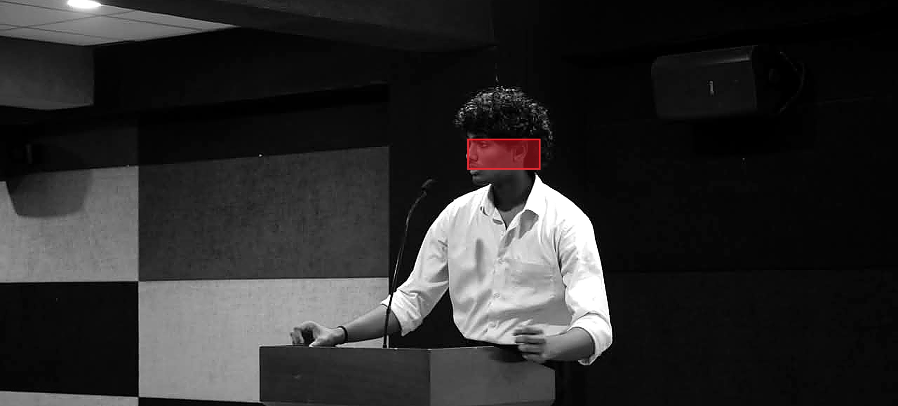

Applied ML & LLMs
Vision-language pipelines, sentence embeddings, anomaly detection and survival models — measured against benchmarks and held-out sets, never vibes.
return RAWRS — shipped to WinVinaya, dailyB.E. CSEEst. 2029CGPA 8.03
01 — Intro

AI/ML ENGINEER
I build and ship AI systems end to end — from vision-language document accessibility used daily by real teams, to blind radio-signal decoding, to bit-exact model quantization merged into llama.cpp.
Selected work↓02 — Selected Work
— Playground
try help, ls, open rawrs, neofetch · ↑/↓ history · Tab completes
03 — About
I'm building AI that reaches real users — a tool used daily at WinVinaya, a hackathon-grade audit engine, a signal decoder from first principles. I test design decisions against benchmarks and held-out sets, and I care about systems that stay reviewable and reversible. Long game: found my own company.
— What I do
Vision-language pipelines, sentence embeddings, anomaly detection and survival models — measured against benchmarks and held-out sets, never vibes.
return RAWRS — shipped to WinVinaya, dailyData pipeline → API → UI, by one person: FastAPI + Pydantic on the back, React + TypeScript on the front, Docker and CI around it.
return idea → production, one hand on itWhen there's no library for it, I build the hard part myself — Viterbi decoders, bit-exact quantization, statistical significance tests.
return ICHNOVA — 30/30, 0 false acceptsI contribute to the tools I use. I read code I didn't write and leave it better than I found it.
return llama.cpp #30630 — merged
04 — Open Source
Added 1-bit and 2-bit GGUF de/quantization to the Python library so tools can load models (e.g. Bonsai) that previously failed with NotImplementedError. Matched the C reference bit for bit — 66/66 checks across 27 quant types.
05 — Contact